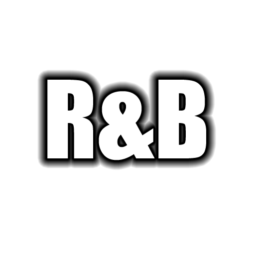
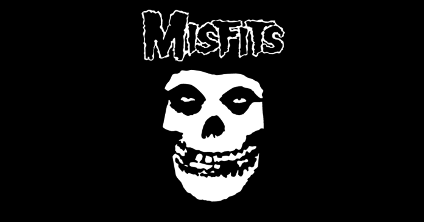
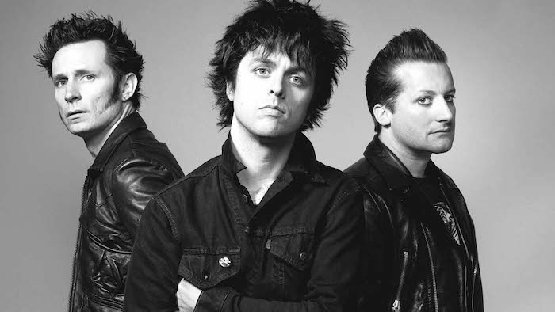
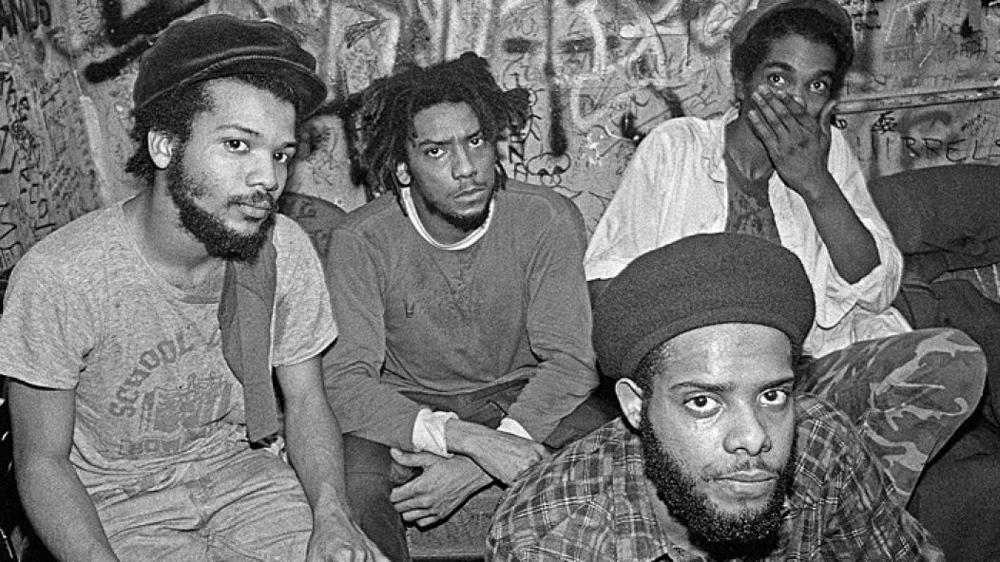
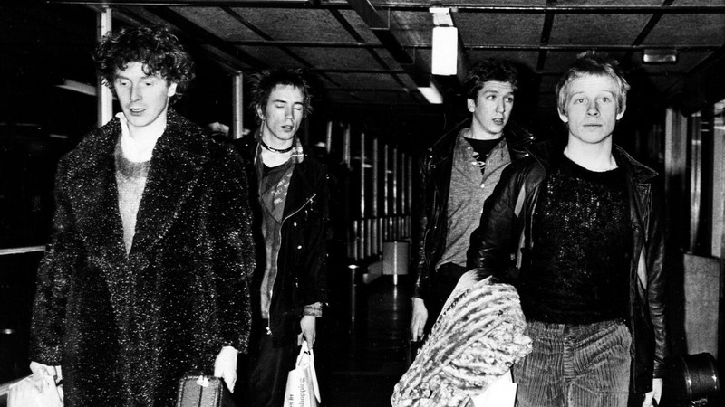
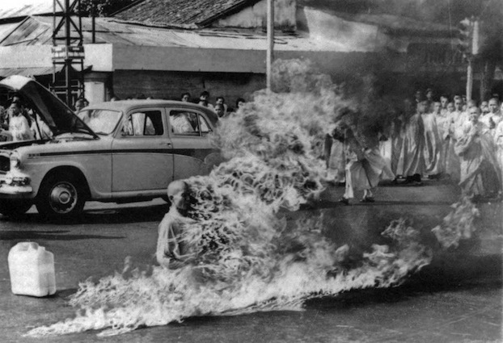

Ideal
Muitas bandas atualmente possuem ideias concretas e dependendo dos seus integrantes eles passam alguma coisa para a visão que querem passar a seu publico

Sentimentos
Todas as musicas passam um certo sentimento para um determinado grupo que entende e corresponde ao grupo inserido, falando sobre amor, valores, possibilidades, visões de vida, e muitos ideais.

Origem
Rock surgiu através do (R&B) Rhythm and blues,é o subgênero com influencias de soul, funk e hip-hop na música pop. Em suas primeiras manifestações, o chamado rhythm and blues era uma versão negra de um predecessor do rock.
Bandas
 Os Misfits são uma banda americana de horror punk formada em 1977 em Lodi, Nova Jérsei, por Glenn Danzig (vocalista) e Jerry Only (baixista). A banda é conhecida por sua estética e temática inspirada em filmes de terror e ficção científica, bem como por sua influência significativa no punk rock e no heavy metal.
Culturalmente, os Misfits exemplificam o anticonformismo, recusando-se a seguir as normas sociais e adotando uma aparência visual distinta com roupas de couro, cabelo estilo "devilock" e maquiagem sombria. Eles se tornaram figuras icônicas na cena punk underground e influenciaram inúmeras outras bandas, ajudando a definir e expandir o movimento punk. Em essência, os Misfits encarnam muitos dos valores centrais do punk, incluindo a autossuficiência, o anticonformismo e a rebeldia, tanto na música quanto na cultura.
Green Day é uma banda de rock americana formada em 1987 em East Bay, Califórnia, pelos membros Billie Joe Armstrong (vocalista e guitarrista) e Mike Dirnt (baixista e vocalista de apoio). Mais tarde, Tré Cool (baterista) juntou-se à banda, solidificando a formação clássica. A banda é amplamente reconhecida por sua contribuição ao punk rock e por ajudar a popularizar o gênero no mainstream durante a década de 1990.
As letras do Green Day frequentemente abordam temas de rebeldia, angústia juvenil, questões sociais e políticas, ressoando com a postura antiautoritária e desafiante do punk. Culturalmente, a banda representa o espírito de rebeldia e anticonformismo, tanto na atitude quanto na estética, com um visual casual e irreverente que rejeita normas sociais rígidas. 
 Bad Brains é uma banda americana de punk rock formada em Washington, D.C., em 1977. Os membros originais são H.R. (vocalista), Dr. Know (guitarrista), Darryl Jenifer (baixista) e Earl Hudson (baterista). Eles são amplamente reconhecidos como pioneiros do punk rock, especialmente por serem uma das primeiras bandas afro-americanas a ter um impacto significativo no gênero.
As letras dos Bad Brains frequentemente abordam temas de resistência e rebeldia contra o sistema, ressoando com a postura antiautoritária do punk rock. Embora incorporem elementos da filosofia Rastafari, promovendo paz e amor, eles também expressam uma forte resistência ao status quo. Culturalmente, os Bad Brains adotaram uma postura anticonformista, recusando-se a seguir as normas da sociedade dominante, algo fundamental na ideologia punk. Além disso, sendo uma das primeiras bandas afro-americanas a ter um impacto significativo no punk, eles desafiaram as normas raciais e culturais dentro do gênero, promovendo diversidade e inclusão.
Os Sex Pistols são uma das bandas mais emblemáticas e influentes do movimento punk rock, formada em Londres, Inglaterra, em 1975. Composto inicialmente por Johnny Rotten (vocal), Steve Jones (guitarra), Glen Matlock (baixo) e Paul Cook (bateria), o grupo é reconhecido por sua música enérgica, letras provocativas e atitude subversiva.
Os Sex Pistols são considerados punks devido à sua música crua e agressiva, letras provocativas e atitude desafiadora. Eles desafiaram as normas sociais e políticas, criticaram o establishment britânico e se tornaram símbolos da estética punk com sua imagem provocativa. Além disso, sua controvérsia e impacto cultural duradouro os destacam como ícones do movimento punk, inspirando gerações de rebeldes e inovadores. Em suma, os Sex Pistols personificam o espírito rebelde e contestador do punk rock, tanto em sua música quanto em sua atitude.

 Rage Against the Machine (RATM) é uma banda americana de rock formada em Los Angeles, Califórnia, em 1991. Composta por Zack de la Rocha (vocal), Tom Morello (guitarra), Tim Commerford (baixo) e Brad Wilk (bateria), o grupo é conhecido por sua fusão única de rock, rap e elementos de funk e metal, combinada com letras politicamente engajadas e contestadoras.
A ideologia do Rage Against the Machine (RATM) é profundamente enraizada no ativismo político e social, destacando-se por sua postura anti-establishment, sua defesa da justiça social e dos direitos humanos, bem como seu apoio à resistência e ao protesto contra injustiças. A banda critica abertamente o sistema político e econômico existente, denunciando corrupção, desigualdade e opressão, enquanto promove a descentralização do poder e a participação popular na tomada de decisões. Sua música serve como uma plataforma para amplificar vozes subalternas e inspirar ação direta em busca de mudança social e política. Em resumo, RATM representa uma voz poderosa para os marginalizados, defendendo uma sociedade mais justa e igualitária através do ativismo e da música.